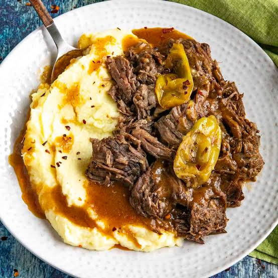

This meal is great for cooking in the morning on a busy day so by the time dinner rolls around all you have to do is plate it up and enjoy! Ive used instant mashed potatoes for this and homemade but regardless of what you use this pot roast is best served over mashed potatoes instead of rice.

This will serve a whole family easily. Between me and my wife we can have multiple servings at dinner time and still have plenty left over for lunch and dinner the next day.
For the roast itself we usually eat it over the course of two days. The mashed potatoes are fine in this timeframe as well but if you are using instant I recommend just making some fresh when its time to reheat.
This dish is heavy on the salt and that is largely due to the seasoning packets and peperoncinis. I would use no salt added tomato sauce ( I use Hunts brand) and carful on any salt adding until its ready to taste. You can also add an extra can of water and let it simmer down longer to help as well.
Another thing I'd like to note is that the ranch and Au Ju seasonings come in shaker form so you can make multiple meals from buying it just once.
Lastly if you are going to make homemade potatoes I would peel them and place them in cold water in the morning so that you don't have to do that at night as it very time consuming and messy. The point of any crockpot dish is you do the work early and enjoy later. but if your using instant then obviously it doesn't matter. 30 before your ready to eat minutes should be enough time to cook the potatoes and get them ready.